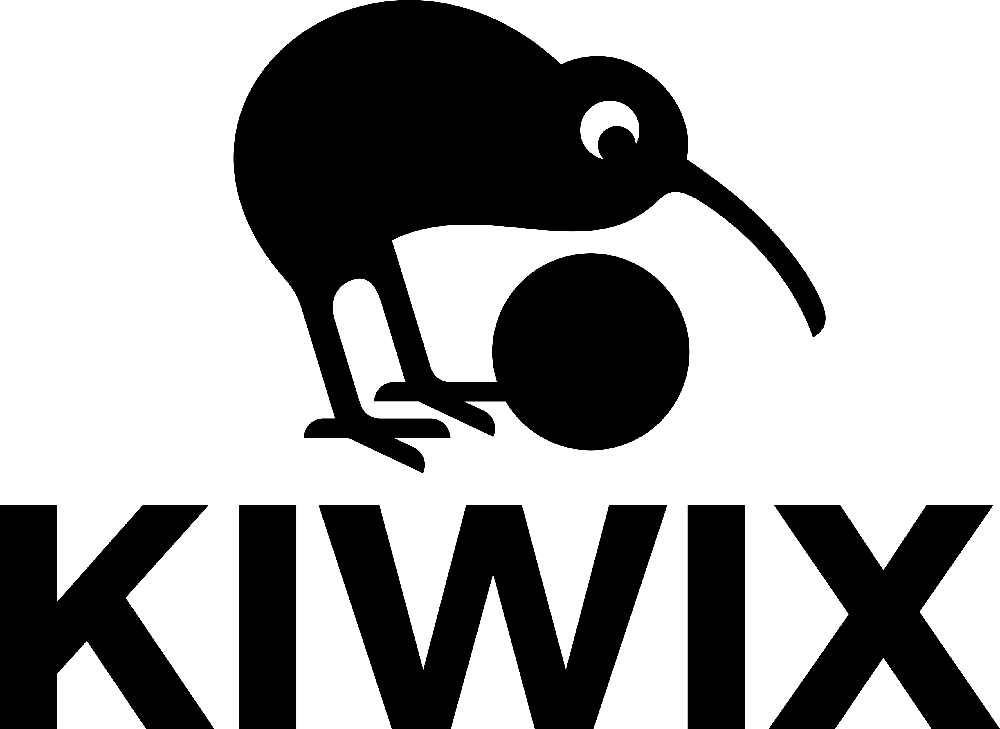
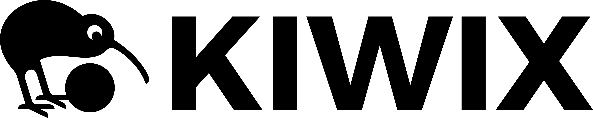
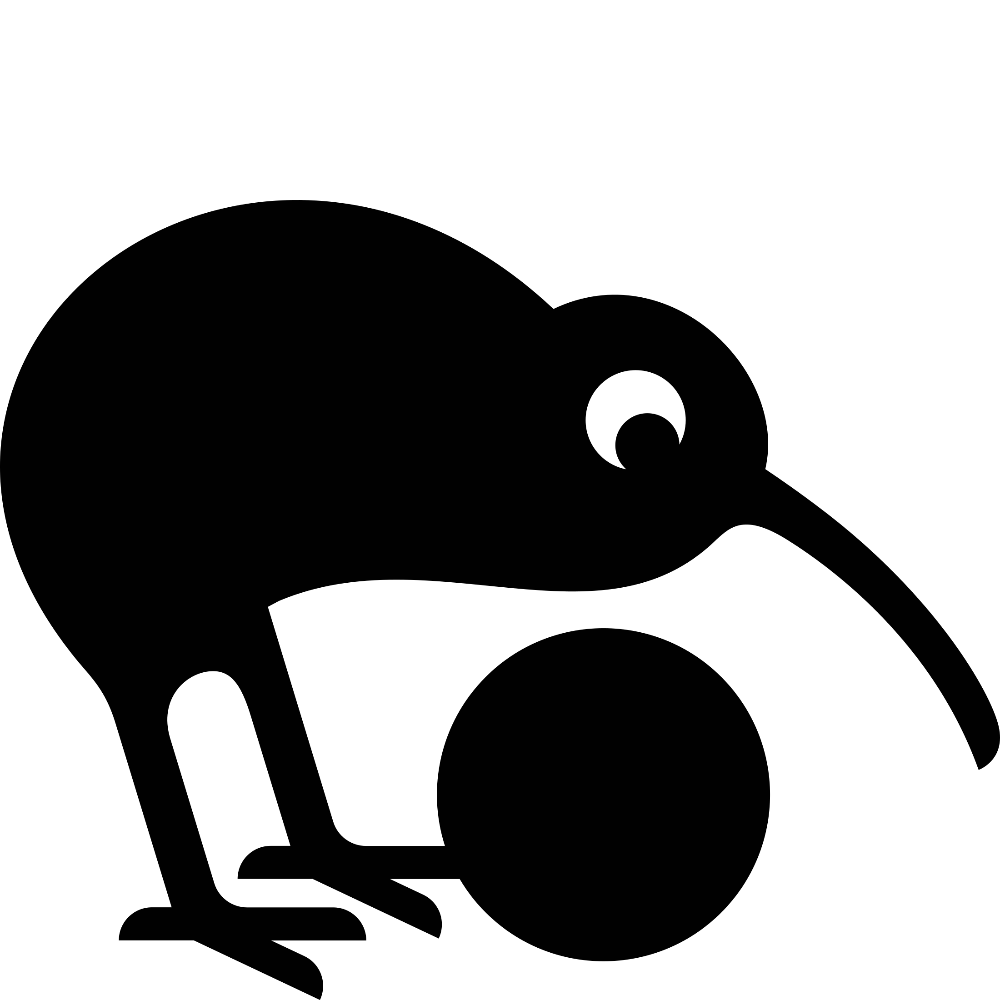
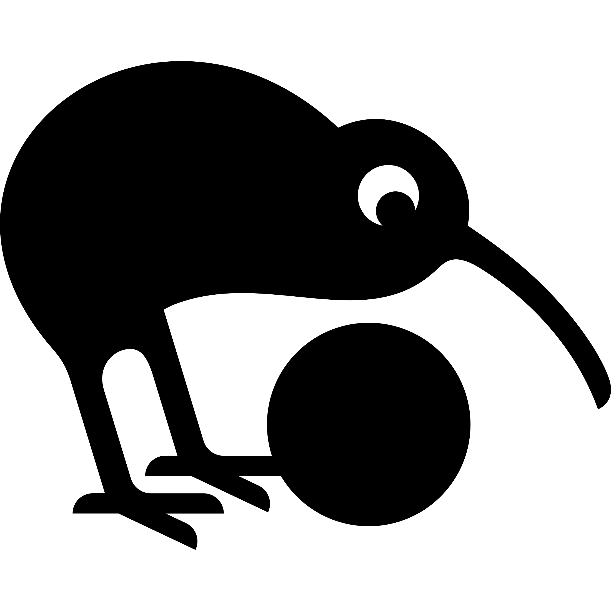
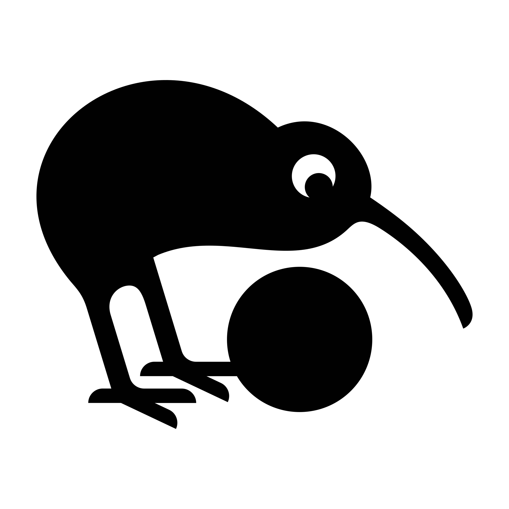
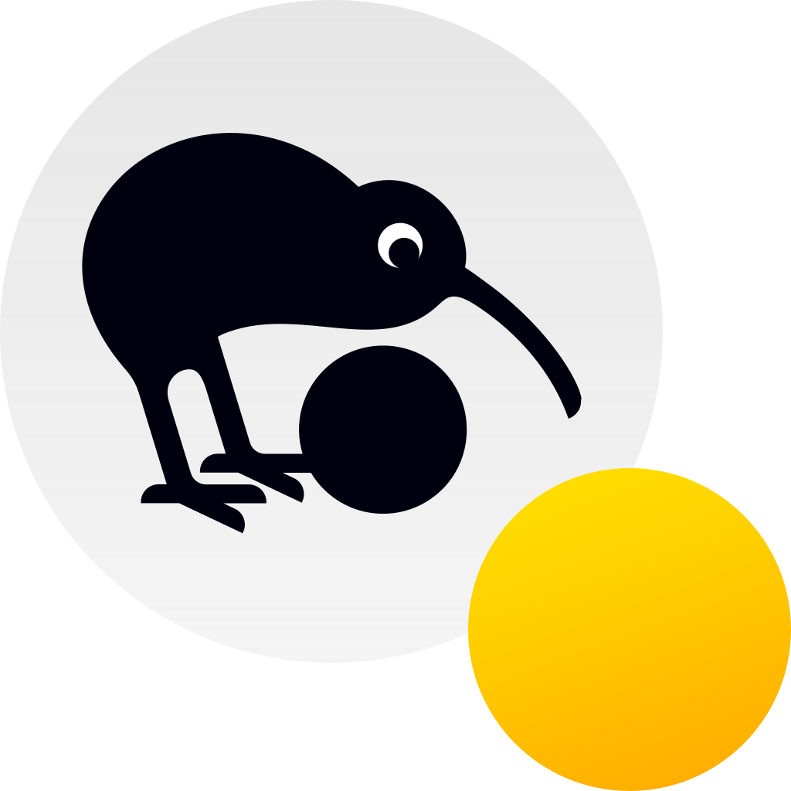
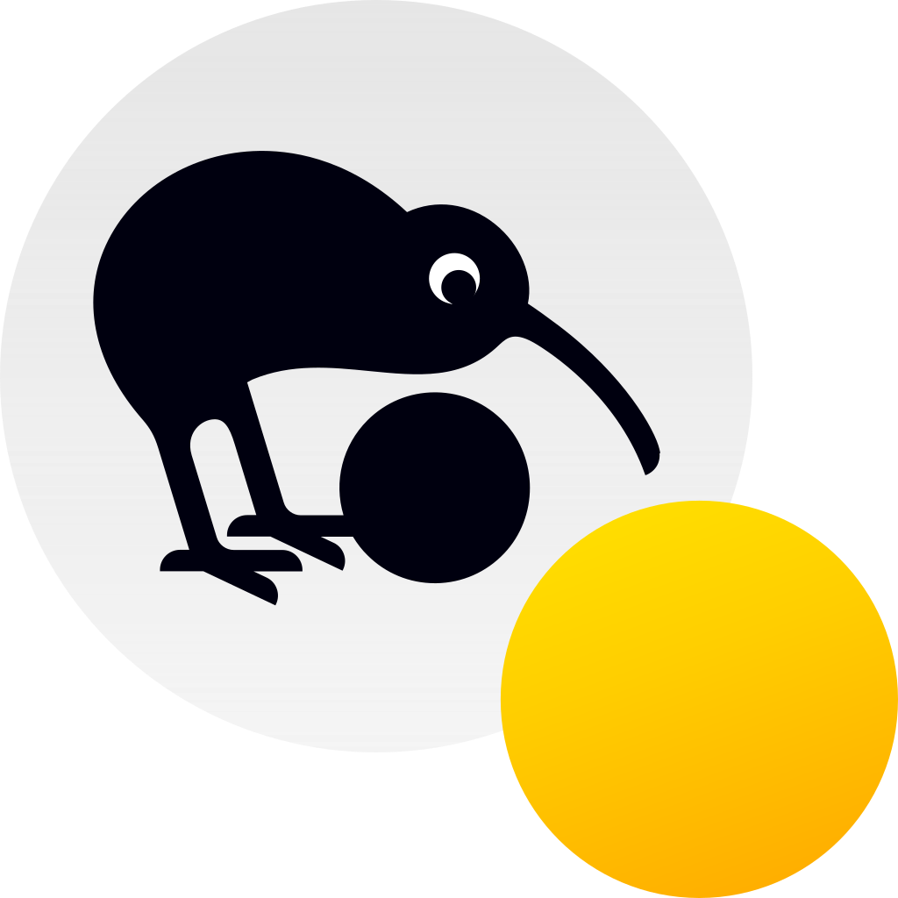

Kiwix Branding Visuals
- This is intended for Kiwix developers.
- If you are not a Kiwix developer, please get in touch with contact@kiwix.org.
- If you are a Kiwix developer, please check in
#design channel on Slack until we publish the visual guidelines.
- ⚠️ All logos are provided without padding, yet padding is mandatory (must be added by user – ask on Slack!) except for Icon which is to be used directly.
- There are no dark-theme friendly version at the moment because the bird is never to be in white. If you need one, ask on Slack.
Kiwix Vertical logo (1.37:1)
Vertical logo PNG (light)

Vertical logo SVG (light/source)
Kiwix Horizontal logo (1:4.98)
Horizontal logo PNG (light)

Horizontal logo SVG (light/source)
Kiwix Square logo (1:1)
Square logo PNG (light)

Kiwix Square logo centered – use this as favicon! (1:1)
Square logo centered PNG (light)

Kiwix Icon logo (square with padding for standalone use – 1:1)
Icon logo PNG (light)

Kiwix Hotspot Horizontal logo (1:6.76)
Horizontal logo PNG (light)
Kiwix JS Icon (1:1)
Kiwix JS Icon is a variant of Kiwix Icon with a yellow (Javascript color) badge mentioning “JS”. Under 48px, the badge should not contain the “JS” text as it's too small to read and the badge provides enough information.
The various sizes are not scaled-down version of a single design. Details around the bird's eye for instance are adjusted for various sizes. We thus have four different SVG which served as base for PNG ones.
Icon SVG (light/dark friendly)
We have slightly different designs based on size. Dimensions in filename mean “this and above until next one”.


Icon PNG (light/dark friendly)